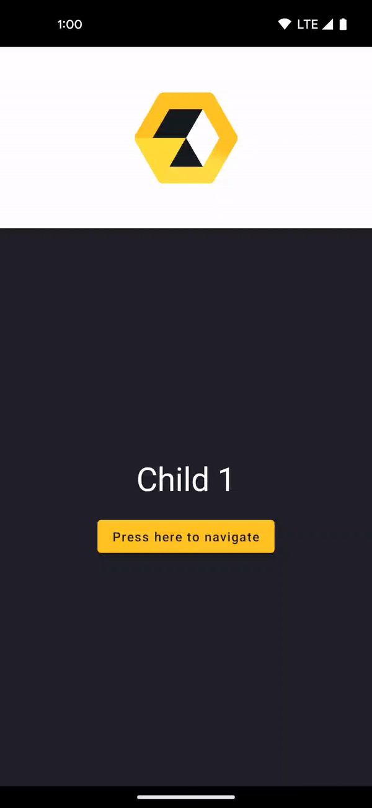
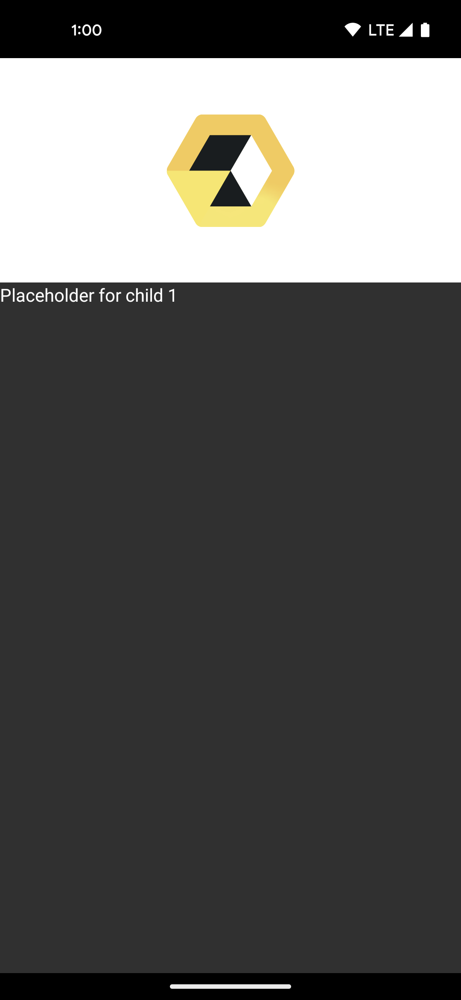
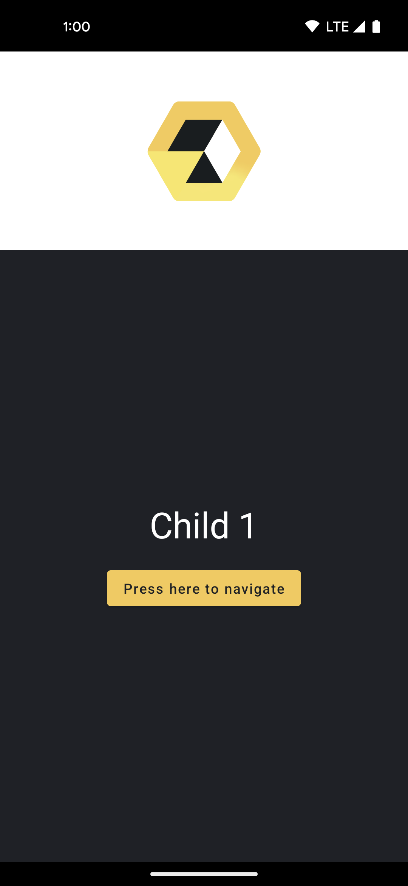
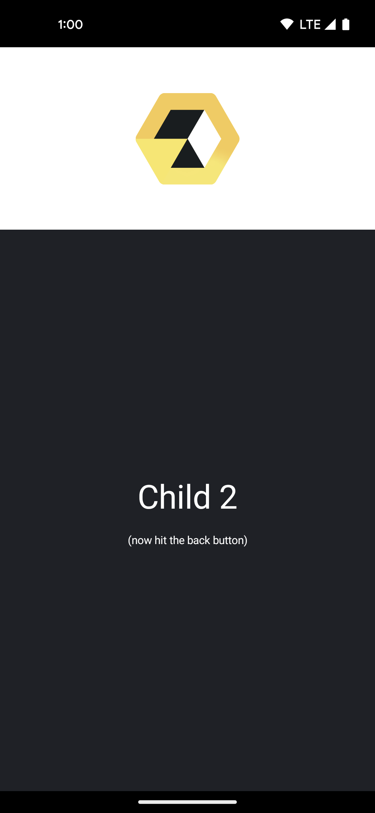

In the previous codelab we've built a simple app using Appyx. We're going to extend that and add navigation.
ParentNode that will have 2 child nodesNavModel to control navigation
Clone the repo and open the SimpleApp project.
git clone git@github.com:bumble-tech/appyx-codelabs.git
This tutorial and the TODOs will help you build a simple app where we'll navigate from one screen to another.
If at any point you're feeling stuck, you can always check out the solution inside the project.
You can refer to our Changelog for the latest release version.
Relevant pages from the Appyx project page:
If you run the app now, it just shows a screen that's built with Appyx. This isn't very interesting, let's add more so we can understand how navigation works with Appyx.
We define the possible navigation targets using a sealed class inside our RootNode.
sealed class NavTarget {
object Child1 : NavTarget()
object Child2 : NavTarget()
}
Next we'll change our RootNode to inherit from a ParentNode instead of a simple Node.
class RootNode(
buildContext: BuildContext
) : ParentNode<RootNode.NavTarget>(
buildContext = buildContext,
navModel = TODO("We'll add this is the following steps")
) {
...
}
This will allow it to have a navModel, and actually change its own navigation destinations.
ParentNode expects us to implement the abstract method resolve. This is the way we associate our navigation targets to actual Node instances.
The good news is we don't even need another Node – we can use simple placeholders until we build one.
Let's use the node(buildContext) { modifier -> ...} method to do that as a first step – we'll soon make it more appealing!
override fun resolve(navTarget: NavTarget, buildContext: BuildContext) =
when (navTarget) {
is RootNode.NavTarget.Child1 -> node(buildContext) {
Text(
text = "Placeholder for child 1",
color = MaterialTheme.colors.onBackground
)
}
is RootNode.NavTarget.Child2 -> node(buildContext) {
Text(
text = "Placeholder for child 2",
color = MaterialTheme.colors.onBackground
)
}
}
Relevant pages from the Appyx project page:
This project wouldn't compile just yet. ParentNode expects us to pass an instance of a NavModel. NavModel is the main point of control when we add children and want to switch between them.
We'll use a familiar NavModel, a BackStack.
In the previous step we added a TODO(), we'll address it now:
class RootNode(
buildContext: BuildContext,
// Add the following block.
// Feel free to use static imports to make it shorter!
private val backStack: BackStack<RootNode.NavTarget> = BackStack(
initialElement = RootNode.NavTarget.Child1,
savedStateMap = buildContext.savedStateMap
)
) : ParentNode<RootNode.NavTarget>(
buildContext = buildContext,
navModel = backStack // <-- replace the TODO() with this
) {
...
}
We can now use the back stack's API to add, replace and pop children.
Our ParentNode has a back stack now but in order to make use of it, we'll need to add it to the composition. We'll modify our View function like so:
@Composable
override fun View(modifier: Modifier) {
Column(
verticalArrangement = Arrangement.Center,
horizontalAlignment = Alignment.CenterHorizontally,
modifier = modifier
) {
Box(
contentAlignment = Alignment.Center,
modifier = Modifier
.height(200.dp)
.fillMaxWidth()
.background(color = if (isSystemInDarkTheme()) appyx_bright else appyx_dark)
) {
Image(
painter = painterResource(id = R.drawable.logo),
contentDescription = "Appyx Logo",
modifier = Modifier.padding(16.dp)
)
}
// This will add the child nodes to the composition
Children(
navModel = backStack,
modifier = Modifier.fillMaxSize()
)
}
}
Your app will look like this:

We can't navigate to the second child yet but don't worry we'll fix that in the next steps.
Let's update our child nodes to look nicer.
Open Child1Node.kt. We'll need to make this class inherit from Node.
Copy the following code, this will be the first screen in our app. Note that we have a button and a callback for triggering a back stack change soon.
class Child1Node(
buildContext: BuildContext,
private val onButtonPressed: () -> Unit // <- This is how we'll trigger a change in the parent
) : Node(buildContext) {
@Composable
override fun View(modifier: Modifier) {
Box(
modifier = modifier
.fillMaxSize()
.background(color = MaterialTheme.colors.background)
) {
Column(
verticalArrangement = Arrangement.Center,
horizontalAlignment = Alignment.CenterHorizontally,
modifier = Modifier
.fillMaxSize()
.background(color = MaterialTheme.colors.background),
) {
Text(
text = "Child 1",
fontSize = 36.sp,
color = MaterialTheme.colors.onBackground,
modifier = Modifier.padding(bottom = 16.dp)
)
Button(
onClick = { onButtonPressed() }, // <- Don't forget to use the callback
colors = ButtonDefaults.buttonColors(
backgroundColor = appyx_yellow1,
contentColor = appyx_dark
)
) {
Text(text = "Press here to navigate")
}
}
}
}
}
The first screen will look like this:

Open Child2Node.kt. We'll need to make this class inherit from Node.
Copy the following code, this will be the second screen in our app.
class Child2Node(buildContext: BuildContext) : Node(buildContext) {
@Composable
override fun View(modifier: Modifier) {
Column(
verticalArrangement = Arrangement.Center,
horizontalAlignment = Alignment.CenterHorizontally,
modifier = Modifier
.fillMaxSize()
.background(color = MaterialTheme.colors.background),
) {
Text(
text = "Child 2",
fontSize = 36.sp,
color = MaterialTheme.colors.onBackground,
modifier = Modifier.padding(bottom = 16.dp)
)
Text(
text = "(now hit the back button)",
fontSize = 12.sp,
color = MaterialTheme.colors.onBackground
)
}
}
}
The second screen will look like this:

Let's now use these newly created child nodes instead of the placeholders!
Simply update the resolve function in RootNode:
override fun resolve(
navTarget: RootNode.NavTarget,
buildContext: BuildContext
) =
when (navTarget) {
is Child1 -> Child1Node(buildContext) { backStack.push(Child2) }
is Child2 -> Child2Node(buildContext)
}
Note how we're finally passing the callback that will push the second child to the back stack when the button is pressed.
Relevant pages from the Appyx project page:
As a first step let's add fading transitions! It's a one-liner:
Children(
...
transitionHandler = rememberBackstackFader()
)
There are other transition handlers, such as rememberBackstackSlider() – you can supply a transionSpec in both cases:
transitionHandler = rememberBackstackFader(transitionSpec = { spring() })
You can also create your own transitions easily. We'll cover this topic in another codelab.
Launch your app! It should look like this:
🎉 Congrats for completing this codelab! 🎉
Check out the other code labs to learn more about Appyx.